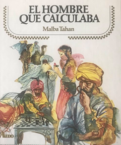

Fiche1 — Exercices & Corrigés (Puissances)
üî∑ Propri√©t√© 1 ‚Äî R√®gles de calcul sur les puissances
Soit \(a,b\) des réels non nuls et \(m,n\) des entiers relatifs :
- \(a^m \times a^n = a^{m+n}\)
- \(\dfrac{a^m}{a^n} = a^{m-n}\)
- \((a\times b)^n = a^n \times b^n\)
- \((a^m)^n = a^{m\times n}\)
üìù Exercice 1 ‚Äî Compl√©ter
Compléter les exposants manquants.
- \(5^2 \times 5^{\;\cdots} \times 5 = 5^{\;\cdots}\)
- \(10^3 \times 10^{\;\cdots} \times 10 = 10^{\;\cdots}\)
- \(\dfrac{5^2 \times 5^3 \times 5}{5^2 \times 5^{-2}} = 5^{\;\cdots}\)
- \((10^2 \times 10^{-3})^2 = 10^{\;\cdots}\)
- \((5^3 \times x^2)^2 = 5^{\;\cdots} \times x^{\;\cdots}\)
- \(10^3 \times 10^{\;\cdots} \times 10 = (10^{-3})^2\)
üìù Exercice 2 ‚Äî Puissances de dix
Écrire sous la forme d’une seule puissance de 10 :
- \(A = \dfrac{10}{10^{-2}} = 10^{\;\cdots}\)
- \(B = \dfrac{10 \times (10^2)^3}{10^{-2} \times 10} = 10^{\;\cdots}\)
- \(C = \dfrac{10^5 \times (10^{-2})^{-1}}{10^4 \times 10} = 10^{\;\cdots}\)
- \(D = \dfrac{2^3 \times (10^3)^{-2}}{5^{-3} \times 10^2} = \;\cdots\)
üìù Exercice 3 ‚Äî Notation scientifique
Définition. La notation scientifique d’un nombre décimal différent de zéro est l’écriture unique de la forme
\(a\times 10^n\) avec \(1 \le a < 10\) et \(n\in\mathbb{Z}\).
Donner la notation scientifique des nombres suivants :
- A = \(0{,}651 \times 10^5 = \;\cdots \times 10^{\;\cdots}\)
- B = \(125\,000 = \;\cdots \times 10^{\;\cdots}\)
- C = \(0{,}0025 = \;\cdots \times 10^{\;\cdots}\)
- D = \(750{,}5 = \;\cdots \times 10^{\;\cdots}\)
üìù Exercice 4 ‚Äî Notation scientifique
Donner l’expression scientifique, en détaillant les calculs de :
- \(A = \dfrac{0{,}5 \times 10^{-5} \times 3 \times 10^3}{10^{-2} \times 15}\)
- \(B = \dfrac{3 \times 10^{-2} \times 1{,}2 \times (10^{-3})^4}{10^{-7} \times 0{,}2}\)
üìù Exercice 5 ‚Äî Notation scientifique
Donner l’expression scientifique et l’écriture décimale, en détaillant les calculs de :
- \(A = \dfrac{0{,}25 \times 10^{-2} \times 8 \times 10^5 \times 3}{10^2 \times 3 \times 10^4}\)
- \(B = \dfrac{0{,}3 \times 10^{-2} \times 14 \times 10^5}{10^2 \times 21 \times 10^{-3}}\)
- \(C = A \times B\)
- \(C = \dfrac{A}{B}\)
üìù Exercice 6 ‚Äî Google ou gogol‚Ķ le savais-tu ?
Google. Le gogol est explicitement revendiqué par Sergueï Brin et Larry Page, les fondateurs de Google,
comme modèle du nom de leur société : « Google a choisi ce terme pour symboliser sa mission : organiser l’immense volume d’information disponible sur le Web. »
À sa création en 1996, la société a été baptisée BackRub par ses co-fondateurs. En 1997, ils ont
renommé le moteur de recherche « Google », déformation de « Googol », pour affirmer leur
ambition de créer un moteur de recherche à très grande échelle.
-
- En mathématiques, le gogol (avec un article défini et tout en minuscules, parfois orthographié googol) est le
nombre dont la représentation décimale s’écrit avec le chiffre 1 suivi de 100 zéros. Il est bien supérieur au nombre
de particules dans l’Univers connu (environ 1080).
- Écrire 1 gogol en puissances de 10.
- Un gogol est bien supérieur au nombre de particules dans l’Univers connu : de combien ? Donner le coefficient multiplicateur sous la forme d’une puissance de 10.
- Donner la décomposition de 1 gogol en produit de facteurs premiers.
- Le gogolplex est défini comme \(10^{\text{gogol}}\).
- Écrire 1 gogolplex (à l’aide de puissances de 10).
- Écrire 1 gogolminex (à l’aide de puissances de 10).
üìù Exercice 7 ‚Äî Avec Pythagore
ABC est un triangle rectangle en A avec \(AB = 10^{10}\) m et \(BC = 10^{11}\) m.
- Calculer \(AB^2\) et \(BC^2\) sous la forme d’une puissance de 10.
- Montrer, à l’aide d’une factorisation par \(10^{20}\), que : \(BC^2 + AB^2 = 101 \times 10^{20}\) et \(BC^2 - AB^2 = 99 \times 10^{20}\).
- Calculer \(AC^2\) puis donner un ordre de grandeur de \(AC^2\) puis de \(AC\).
- Exprimer l’aire du carré construit sur le côté [AB] en km et en notation scientifique.
♟️ Exercice 8 — La légende de Sessa (échiquier)
Sessa. En Inde, une légende vieille de 1500 ans raconte comment un Brahmane (membre d’une caste religieuse) du nom de Sessa fut récompensé pour avoir inventé le jeu d’échec.
Le roi des Indes fut tant émerveillé lorsque Sessa lui apprit le jeu que le roi lui proposa de choisir la récompense qu’il souhaitait.
Le Brahmane demanda alors la quantité de grains de blé qu’il serait nécessaire pour remplir les 64 cases d’un échiquier en respectant la condition suivante, chaque case doit contenir deux fois plus de grains de blé que la précédente sachant que la première case ne contient qu’un seul grain.
Soit : 1 grain de blé sur la première case
2 grains sur la seconde
4 grains (soit 2 fois 2) sur la troisième
8 grains (2 fois 2 fois 2) sur la quatrième
16 grains (2 fois 2 fois 2 fois 2) sur la cinquième etc ...
Le roi accepta la demande de Sessa en se disant que celle-ci était plutôt modeste.
Mais lorsqu’un arithméticien résolut le problème, le roi se rendit compte que le Brahmane l’avait dupé et que la quantité de grains de blé qu’il demandait était impossible à fournir.
.

-
- Sur quelle case devrait-il y avoir \(2^3\) grains ? \(2^8\) grains ? \(2^{31}\) grains ?
- Quelle quantité de grains est nécessaire pour remplir tout l’échiquier ? Donner le résultat comme somme de puissances de 2 (on peut utiliser « … »).
-
- Vérifier : \(1 + 2 = 2^2 - 1\), \(1 + 2 + 2^2 = 2^3 - 1\), \(1 + 2 + 2^2 + 2^3 = 2^4 - 1\).
- Montrer que pour tout entier \(n\), \(1 + 2 + 2^2 + \cdots + 2^{n-1} = 2^n - 1\), puis en déduire le résultat de 1.b).
- En utilisant la calculatrice, donner une valeur approchée en notation scientifique pour la quantité totale de grains.
- On ne peut pas calculer exactement \(2^{64}\) sur une calculatrice simple, mais \(2^{32}\) oui. En déduire la valeur exacte totale \(18\,446\,744\,073\,709\,551\,615\).
- Dans 1 m³, on peut ranger environ 1,5 million de grains. Le roi dispose d’un grenier de 5 m × 10 m. Quelle hauteur faut‑il prévoir pour stocker tous les grains ? Donner le résultat en km et comparer à la distance Terre–Soleil.
- Sachant qu’il faudra 6 mois pour compter 1 m³, combien d’années faudrait‑il pour dénombrer l’ensemble de la récompense ?
üü© Corrig√© ‚Äì Exercice 1 (Compl√©ter)
- \(5^2 \times 5^{\mathbf{3}} \times 5 = 5^{\mathbf{6}}\)
- \(10^3 \times 10^{\mathbf{2}} \times 10 = 10^{\mathbf{6}}\)
- \(\dfrac{5^2 \times 5^3 \times 5}{5^2 \times 5^{-2}} = 5^{\mathbf{6}}\)
- \((10^2 \times 10^{-3})^2 = 10^{\mathbf{-2}}\)
- \((5^3 \times x^2)^2 = 5^{\mathbf{6}} \times x^{\mathbf{4}}\)
- \(10^3 \times 10^{\mathbf{-10}} \times 10 = (10^{-3})^2\)
üü© Corrig√© ‚Äì Exercice 2 (Puissances de dix)
- \(A = \dfrac{10}{10^{-2}} = 10^{\mathbf{3}}\)
- \(B = \dfrac{10 \times (10^2)^3}{10^{-2} \times 10} = 10^{\mathbf{8}}\)
- \(C = \dfrac{10^5 \times (10^{-2})^{-1}}{10^4 \times 10} = 10^{\mathbf{2}}\)
- \(D = \dfrac{2^3 \times (10^3)^{-2}}{5^{-3} \times 10^2} = \mathbf{10^{-5}}\)
üü© Corrig√© ‚Äì Exercice 3 (Notation scientifique)
- A \(=\;0{,}651 \times 10^5 \;=\; \mathbf{6{,}51} \times 10^{\mathbf{4}}\)
- B \(=\;125\,000 \;=\; \mathbf{1{,}25} \times 10^{\mathbf{5}}\)
- C \(=\;0{,}0025 \;=\; \mathbf{2{,}5} \times 10^{\mathbf{-3}}\)
- D \(=\;750{,}5 \;=\; \mathbf{7{,}505} \times 10^{\mathbf{2}}\)
üü© Corrig√© ‚Äì Exercice 4 (c) Notation scientifique
- \(A = \dfrac{0{,}5 \times 10^{-5} \times 3 \times 10^3}{10^{-2} \times 15}
= \mathbf{1 \times 10^{-1}}\)
- \(B = \dfrac{3 \times 10^{-2} \times 1{,}2 \times (10^{-3})^4}{10^{-7} \times 0{,}2}
= \mathbf{1{,}8 \times 10^{-6}}\)
üü© Corrig√© ‚Äì Exercice 5 (c) Notation scientifique
- \(A = \dfrac{0{,}25 \times 10^{-2} \times 8 \times 10^5 \times 3}{10^2 \times 3 \times 10^4}
= \mathbf{2 \times 10^{-3}} \;=\; 0{,}002\)
- \(B = \dfrac{0{,}3 \times 10^{-2} \times 14 \times 10^5}{10^2 \times 21 \times 10^{-3}}
= \mathbf{2 \times 10^{3}} \;=\; 2000\)
- \(C = A \times B = (2 \times 10^{-3}) \times (2 \times 10^{3})
= \mathbf{4 \times 10^{0}} \;=\; 4\)
- \(D = \dfrac{A}{B} = \dfrac{2 \times 10^{-3}}{2 \times 10^{3}}
= \mathbf{1 \times 10^{-6}} \;=\; 0{,}000001\)
üü© Corrig√© ‚Äì Exercice 6 (Google / gogol)
-
- (rappel) Un gogol vaut \(1\) suivi de 100 zéros.
- \(\mathbf{1\ \text{gogol} = 10^{100}}\)
- \(\dfrac{10^{100}}{10^{80}} = \mathbf{10^{20}}\) (le gogol est \(10^{20}\) fois plus grand)
- \(10^{100} = (2 \times 5)^{100} = \mathbf{2^{100} \times 5^{100}}\)
-
- \(\mathbf{1\ \text{gogolplex} = 10^{\,10^{100}}}\)
- \(\mathbf{1\ \text{gogolminex} = 10^{-\,10^{100}}}\)
üü© Corrig√© ‚Äì Exercice 7 (Avec Pythagore)
- \(AB^2 = (10^{10})^2 = \mathbf{10^{20}}\ \text{m}^2,\quad
BC^2 = (10^{11})^2 = \mathbf{10^{22}}\ \text{m}^2\)
- \(BC^2 + AB^2 = 10^{22} + 10^{20} = 10^{20}(10^2+1) = \mathbf{101 \times 10^{20}}\)
\(BC^2 - AB^2 = 10^{22} - 10^{20} = 10^{20}(10^2-1) = \mathbf{99 \times 10^{20}}\)
- \(AC^2 = BC^2 - AB^2 = \mathbf{99 \times 10^{20}}
= 9{,}9 \times 10^{21}\) → ordre de grandeur \(\mathbf{10^{22}}\).
\(AC = \sqrt{AC^2} = \sqrt{99}\times 10^{10} \approx \mathbf{9{,}95 \times 10^{10}}\ \text{m}\) → ODG \(\mathbf{10^{11}}\ \text{m}\).
- Aire du carré sur \([AB]\) : \(AB^2 = \mathbf{10^{20}}\ \text{m}^2
= \mathbf{10^{14}}\ \text{km}^2\) (car \(1\ \text{km}^2 = 10^6\ \text{m}^2\)).
üü© Corrig√© ‚Äì Exercice 8 (La l√©gende de Sessa)
-
- Case \(n\) : \(2^{n-1}\) grains ⇒ \(2^3\) → case \(\mathbf{4}\);\; \(2^8\) → case \(\mathbf{9}\);\; \(2^{31}\) → case \(\mathbf{32}\).
- Total sur 64 cases : \(\mathbf{1+2+4+\cdots+2^{63} = 2^{64}-1}\).
-
- Vérifications : \(1+2=2^2-1\), \(1+2+2^2=2^3-1\), \(1+2+2^2+2^3=2^4-1\).
- Pour tout \(n\) : \(1+2+\cdots+2^{n-1}=2^n-1\) ⇒ pour \(n=64\) : \(\mathbf{2^{64}-1}\).
- Valeur approchée : \(\mathbf{2^{64}-1 \approx 1{,}84 \times 10^{19}}\) grains.
- Valeur exacte : \(\mathbf{18\,446\,744\,073\,709\,551\,615}\).
- Volume si \(1{,}5\times 10^6\) grains/m\(^3\) :
\(V \approx \dfrac{1{,}8446744\times 10^{19}}{1{,}5\times 10^6}
\approx \mathbf{1{,}23 \times 10^{13}}\ \text{m}^3\).
Grenier \(5 \times 10 = 50\ \text{m}^2\) ⇒ hauteur
\(h = \dfrac{V}{S} \approx \dfrac{1{,}23 \times 10^{13}}{50}
\approx \mathbf{2{,}46 \times 10^{11}}\ \text{m}
= \mathbf{2{,}46 \times 10^{8}}\ \text{km}\) (>\ distance Terre–Soleil \(\approx 1{,}5 \times 10^{8}\) km).
- Temps de comptage (6 mois/m\(^3\) = 0,5 an/m\(^3\)) :
\(T \approx 0{,}5 \times 1{,}23 \times 10^{13}
= \mathbf{6{,}15 \times 10^{12}}\ \text{ans}\).